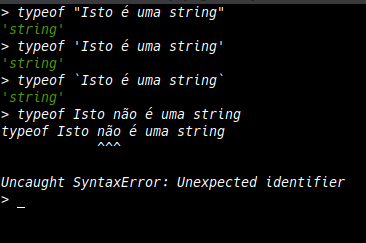
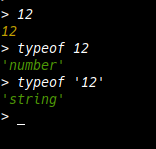
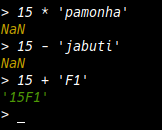
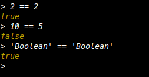

String
String é uma cadeia de caracteres, que formam frases ou palavras, mas é necessaŕio colocar esse texto entre aspas simples(' '), aspas duplas(" ") ou crase(` `, que também são chamada de template strings), se um texto é inserido sem estar entre um desses três mencionados, o JavaScript não entende como uma string.
Vale ressaltar que aspas duplas ou simples, não permitem escrever um multiplas linhas, apenas usando as crases
"
não é permitido.
"
`
é permitido.
`
Exemplo:

Tirando a prova real, pedindo pra verificar o tipo do item que queremos (typeof), podemos perceber que é necessário o texto estar dentro de aspas para ser considerado uma string.
Você pode teste isso abrindo o console do próprio navegador, para isto é só pressionar a teclas F12, e ir para aba com o nome "console".
Number
- Inteiros
- Os números inteiros são os números negativos e positivos, incluindo o zero, que não apresentam parte decimal.
- Reais
- Os números reais é o conjunto de elementos, que inclui os n° naturais, inteiros, racionais e irracionais, resumindo, um número real pode ser qualquer número.
- NaN
- NaN é um acrônimo para Not a Number, que seria um "Não é um Número".
- Infinity
- O próprio nome já fala por si só, é um número infinito, pode ser positivo ou negativo.
Representando um Number no JavaScript
Para representar um número no JavaScript, é só inserir ele normalmente, sem estar entre aspas, que se feito isso, ele passará a ser uma string. Lembrando que usei o typeof para ver o tipo do valor inserido.

NaN
Um NaN é quando o JavaScript não considera algo um número
Fazer operações com dados que não são considerados números, o JavaScript retorna um NaN, com exceção ao operador de soma (+), que tem a função extra de concatenação, que é juntar uma parte do código com outra. Se ficou confuso, de uma olhada no artigo sobre Operadores Lógicos.

Boolean
Boolean ou boleano, é um tipo de dado que só tem dois valores, ou dois estados, que é, true (verdadeiro) ou false (falso), é um tipo de dado bem simples, mas essencial para a lógica de programação.
O valor boleano e usado pra saber se algo é verdairo ou não.

Aqui usamos o operador lógico de igualdade (==), mas podemos usar outros operadores de comparação, como, maior que (>), maior ou igual que (⩾). Se ficou confuso, veja este artigo sobre Operadores Lógicos.